第 4 章 动态行为
没有摇摆感，一切都不算数。
本章广泛讨论动态系统的行为，重点放在由非线性微分方程建模的系统上。这样我们就可以讨论平衡点、稳定性、极限环，以及理解动态行为所需的其他关键概念。我们还会介绍一些分析解的全局行为的方法。
4.1 求解微分方程
前两章已经看到，建模动态系统的一种方法是使用常微分方程。状态空间输入输出系统具有形式
其中 \(x=(x_1,\ldots,x_n)\in\mathbb{R}^n\) 是状态，\(u\in\mathbb{R}^p\) 是输入，\(y\in\mathbb{R}^q\) 是输出。光滑映射 \(f:\mathbb{R}^n\times\mathbb{R}^p\to\mathbb{R}^n\) 和 \(h:\mathbb{R}^n\times\mathbb{R}^p\to\mathbb{R}^q\) 分别表示系统动态和测量。一般来说，它们可以是其自变量的非线性函数。我们有时会关注单输入单输出系统，也就是 SISO 系统，此时 \(p=q=1\)。
我们从这样一类系统开始：输入已经被设为状态的函数 \(u=\alpha(x)\)。这是最简单的反馈类型之一，系统借此调节自身行为。此时微分方程变为
为了理解这个系统的动态行为，我们需要分析式 (4.2) 的解所具有的特征。在某些简单情形中，我们可以写出解析形式的解；但很多时候，我们必须依赖计算方法。先描述这个问题的解的类别。
如果在时间区间 \(t_0\in\mathbb{R}\) 到 \(t_f\in\mathbb{R}\) 上，函数 \(x(t)\) 满足
我们就说 \(x(t)\) 是微分方程 (4.2) 在该时间区间上的一个解。
一个给定微分方程可能有许多解。我们最常关心的是初值问题，其中 \(x(t)\) 在给定时刻 \(t_0\in\mathbb{R}\) 处被指定，我们希望找到对所有未来时间 \(t>t_0\) 都有效的解。
如果 \(x(t)\) 满足
我们就说它是初值为 \(x_0\in\mathbb{R}^n\)、初始时刻为 \(t_0\in\mathbb{R}\) 的微分方程 (4.2) 的解。对本书中会遇到的大多数微分方程来说，存在一个唯一解，并且它在 \(t_0<t<t_f\) 上有定义。解可能对所有 \(t>t_0\) 都有定义，此时取 \(t_f=\infty\)。由于我们主要关心常微分方程初值问题的解，通常会直接称它为一个常微分方程的解。
通常假设 \(t_0=0\)。当 \(F\) 与时间无关时，如式 (4.2)，通过选择新的独立变量 \(\tau=t-t_0\)，可以不失一般性地这样做，见习题 4.1。
例 4.1 带阻尼振子
考虑一个带阻尼线性振子，其动态具有形式
其中 \(q\) 是振子相对于静止位置的位移。这一动态等价于弹簧质量系统的动态，如习题 2.6 所示。我们假设 \(\zeta<1\)，对应轻阻尼系统。稍后会看到为什么选择这种情形。把 \(x_1=q\)、\(x_2=\dot q\)，可以将它写成状态空间形式：
右端向量形式为
初值问题的解可以用许多不同方式写出，第 5 章会更详细地研究。这里直接给出一种写法：
其中 \(x_0=(x_{10},x_{20})\) 是初始条件，\(\omega_d=\omega_0\sqrt{1-\zeta^2}\)。把这个解代入微分方程即可验证。可以看到，解显式依赖初始条件，而且可以证明这个解是唯一的。图 4.1 显示了初始条件响应。
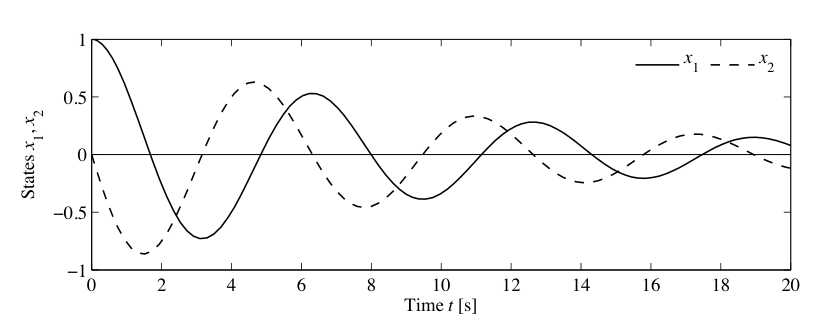
注意，这种解的形式只对 \(0<\zeta<1\) 成立，对应欠阻尼振子。
如果不对函数 \(F\) 施加一些数学条件，微分方程 (4.2) 未必对所有 \(t\) 都有解，也不能保证解唯一。下面两个例子说明这些可能性。
例 4.2 有限逃逸时间
令 \(x\in\mathbb{R}\)，考虑微分方程
以及初始条件 \(x(0)=1\)。通过求导可以验证，函数
满足微分方程，也满足初始条件。图 4.2a 给出解的图像；注意，当 \(t\) 趋近于 1 时，解趋于无穷。我们说这个系统具有有限逃逸时间。因此，解只存在于时间区间 \(0\le t<1\) 上。
例 4.3 非唯一解
令 \(x\in\mathbb{R}\)，考虑微分方程
初始条件为 \(x(0)=0\)。可以证明，对所有参数 \(a\ge0\)，函数
都满足该微分方程。为了看出这一点，对 \(x(t)\) 求导得到
因此对所有 \(t\ge0\)，都有 \(\dot x=2\sqrt{x}\)，且 \(x(0)=0\)。图 4.2b 给出部分可能解的图像。注意，在这个例子中，微分方程有许多解。
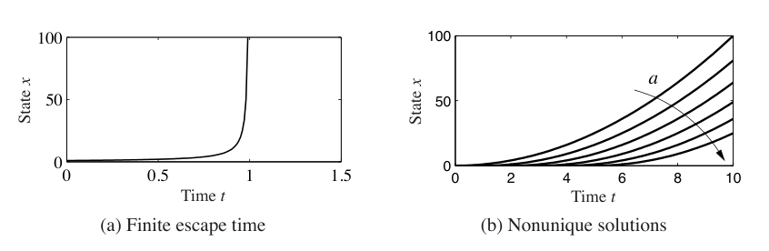
这些简单例子说明，即便简单微分方程也可能出现困难。若要求函数 \(F\) 具有如下性质，则可以保证存在性和唯一性：对某个固定 \(c\in\mathbb{R}\)，
这个性质称为 Lipschitz 连续。函数是 Lipschitz 连续的一个充分条件是雅可比矩阵 \(\partial F/\partial x\) 对所有 \(x\) 一致有界。例 4.2 的困难在于导数 \(\partial F/\partial x\) 在 \(x\) 很大时会变大；例 4.3 的困难在于导数 \(\partial F/\partial x\) 在原点处无穷大。
4.2 定性分析
非线性系统的定性行为，对理解非线性动态中的若干稳定性核心概念很重要。我们将关注一类重要系统，即平面动态系统。这些系统有两个状态变量 \(x\in\mathbb{R}^2\)，因此它们的解可以画在 \((x_1,x_2)\) 平面中。我们要描述的基本概念更加一般，也可用于理解更高维中的动态行为。
相图
理解状态为 \(x\in\mathbb{R}^2\) 的动态系统行为时，一个方便工具是系统的相图。第 2 章已经简要介绍过相图。我们先引入向量场概念。对一个常微分方程系统
微分方程右端在每个 \(x\in\mathbb{R}^n\) 处定义了一个速度 \(F(x)\in\mathbb{R}^n\)。这个速度告诉我们 \(x\) 如何变化，并可表示为向量 \(F(x)\)。
对平面动态系统，每个状态对应平面中的一点，而 \(F(x)\) 是表示该状态速度的向量。我们可以把这些向量画在平面中的网格点上，得到系统动态的视觉图像，如图 4.3a 所示。速度为零的点特别有意义，因为它们定义了流的静止点：如果从这样的状态开始，系统就会留在该状态。
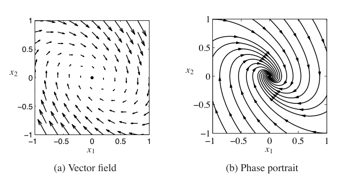
相图通过绘制平面动态系统对应向量场的流来构造。也就是说，对一组初始条件，我们把微分方程的解画在平面 \(\mathbb{R}^2\) 中。这相当于在相平面中沿每一点的箭头前进，并画出所得轨迹。对若干不同初始条件画出解，就得到相图，如图 4.3b 所示。相图有时也称为相平面图。
相图把解画在系统的二维状态空间中，因此能提供关于系统动态的洞见。例如，我们可以看出随着时间增加，所有轨迹是否都趋向单一点，还是出现更复杂行为。图 4.3 中的例子对应带阻尼振子，所有初始条件下的解都接近原点。这与图 4.1 的仿真一致，但相图允许我们推断所有初始条件下的行为，而不仅是一个初始条件。不过，相图不容易直接告诉我们状态变化速率，虽然可以从向量场图中箭头长度推断。
平衡点与极限环
动态系统的平衡点表示动态的静止条件。对于动态系统
如果 \(F(x_e)=0\)，我们就说状态 \(x_e\) 是平衡点。如果动态系统的初始条件为 \(x(0)=x_e\)，那么系统会停留在平衡点：对所有 \(t\ge0\)，有 \(x(t)=x_e\)，这里取 \(t_0=0\)。
平衡点是动态系统最重要的特征之一，因为它们定义了对应于恒定运行条件的状态。一个动态系统可以没有平衡点，也可以有一个或多个平衡点。
例 4.4 倒立摆
考虑图 4.4 中的倒立摆，它是第 2 章讨论过的平衡系统的一部分。倒立摆是稳定火箭问题的简化版本：我们希望通过在火箭底部施加力，使火箭保持在直立位置。状态变量是角度 \(\theta=x_1\) 和角速度 \(d\theta/dt=x_2\)，控制变量是支点加速度 \(u\)，输出是角度 \(\theta\)。
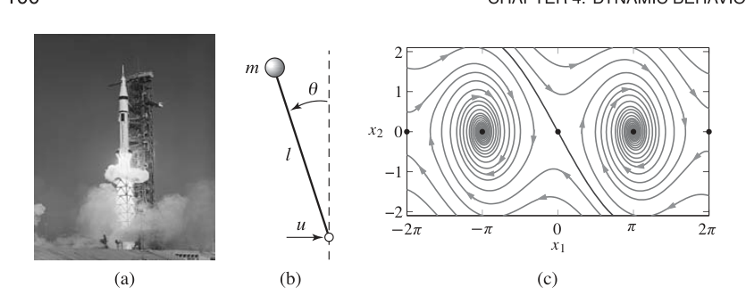
为简单起见，假设 \(mgl/J_t=1\)、\(ml/J_t=1\)，于是动态，即式 (2.10)，变为
这是一个二阶非线性时不变系统。同一组方程也可以通过适当归一化系统动态得到，如例 2.7 所示。
令 \(u=0\)，考察开环动态。系统平衡点为
偶数 \(n\) 对应摆指向上方，奇数 \(n\) 对应摆向下悬挂。图 4.4c 显示了该系统在没有校正输入时的相图。相图显示 \(-2\pi\le x_1\le2\pi\)，因此可以看到五个平衡点。
非线性系统可以表现出丰富行为。除了平衡点之外，它们还可以表现出静止周期解。这在实际中非常有价值，例如在电力系统中产生正弦变化电压，或为动物运动产生周期信号。习题 4.12 给出一个简单例子，其中显示了电子振荡器的电路图。该振荡器的一个归一化模型由下式给出：
图 4.5 给出相图和时域解。图中显示，相平面中的解会收敛到一条圆形轨迹。在时域中，这对应一个振荡解。数学上，这个圆称为极限环。更正式地说，如果一个孤立解 \(x(t)\) 满足对所有 \(t\in\mathbb{R}\) 都有 \(x(t+T)=x(t)\)，且周期 \(T>0\)，我们称它为极限环。
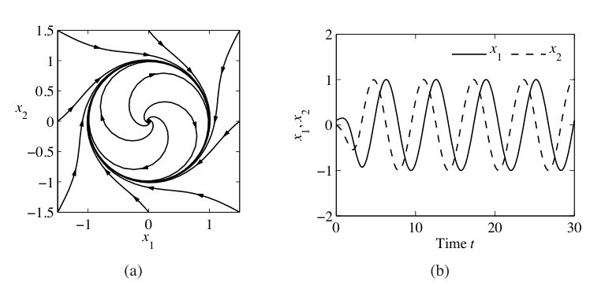
对于二阶系统，有一些确定极限环的方法；但对一般高阶系统，我们必须依赖计算分析。计算机算法通过在状态空间中搜索满足系统动态的周期轨迹来寻找极限环。许多情形中，通过用不同初始条件仿真系统，可以找到稳定极限环。
4.3 稳定性
一个解的稳定性决定了该解附近的解是保持接近、逐渐靠近，还是逐渐远离。现在给出稳定性的形式定义，并描述判断一个解是否稳定的测试方法。
定义
令 \(x(t;a)\) 为以 \(a\) 为初始条件的微分方程解。如果从 \(a\) 附近开始的其他解始终靠近 \(x(t;a)\)，我们称该解稳定。形式化地说，如果对任意 \(\epsilon>0\)，存在 \(\delta>0\)，使得
则称解 \(x(t;a)\) 稳定。
注意，这个定义并不意味着 \(x(t;b)\) 会随着时间增加而接近 \(x(t;a)\)，只意味着它停留在附近。此外，\(\delta\) 的值可能依赖 \(\epsilon\)，因此如果我们希望一直非常接近该解，可能必须从非常接近的位置开始，也就是 \(\delta\ll1\)。这种稳定性如图 4.6 所示，也称为李雅普诺夫意义下的稳定。如果一个解在这种意义下稳定，但轨迹并不收敛，我们称该解为中性稳定。
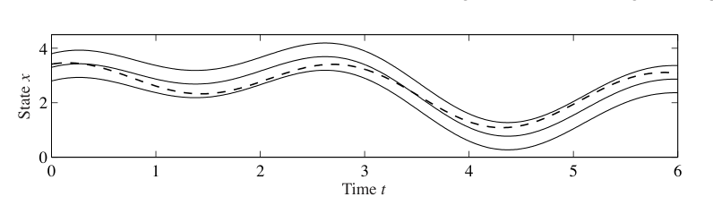
一个重要特例是，解 \(x(t;a)=x_e\) 是平衡解。此时我们不说该解稳定，而直接说平衡点稳定。图 4.7 显示了一个中性稳定平衡点的例子。从相图可以看到，如果从平衡点附近开始，系统就会留在平衡点附近。事实上，在这个例子中，给定任意定义可能初始条件范围的 \(\epsilon\)，可直接选择 \(\delta=\epsilon\) 来满足稳定性定义，因为轨迹是完美圆。
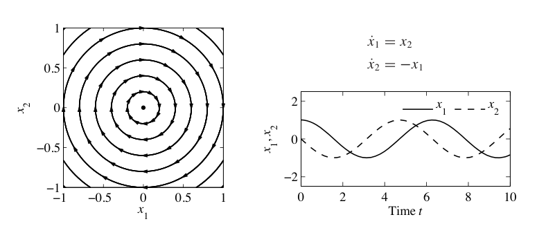
如果解 \(x(t;a)\) 在李雅普诺夫意义下稳定，并且当 \(b\) 充分接近 \(a\) 时有 \(x(t;b)\to x(t;a)\)，\(t\to\infty\)，则称它为渐近稳定。这对应所有邻近轨迹在长时间后收敛到稳定解的情形。图 4.8 显示了一个渐近稳定平衡点例子。注意，从相图可以看到，不仅所有轨迹都保持在原点平衡点附近，而且随着 \(t\) 变大，它们也都趋向原点，相图上的箭头方向显示了轨迹运动方向。
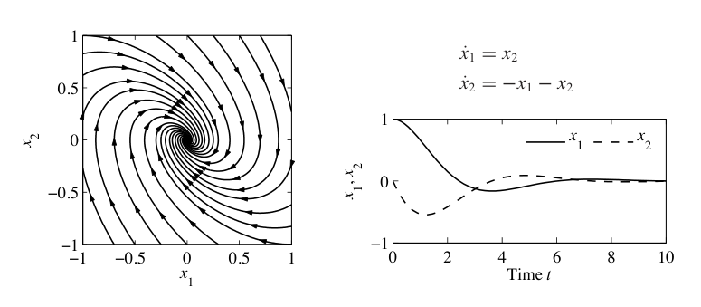
如果解 \(x(t;a)\) 不稳定，则称它为不稳定。更具体地说，如果存在某个 \(\epsilon>0\)，不存在任何 \(\delta>0\) 能使 \(\|b-a\|<\delta\) 蕴含对所有 \(t\) 都有 \(\|x(t;b)-x(t;a)\|<\epsilon\)，我们就说解 \(x(t;a)\) 不稳定。图 4.9 显示了一个不稳定平衡点例子。
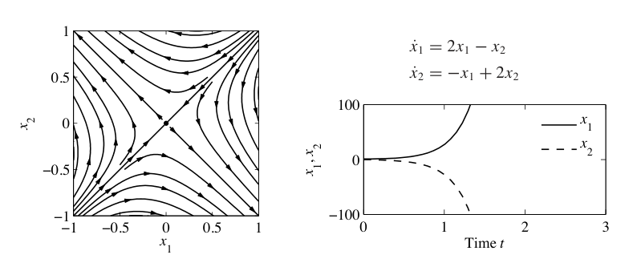
上面的定义没有仔细描述其适用域。更正式地说，如果对所有初始条件 \(x\in B_r(a)\) 都稳定，其中
是以 \(a\) 为中心、半径为 \(r\) 的球，且 \(r>0\)，我们称解局部稳定，或局部渐近稳定。如果系统对所有 \(r>0\) 都稳定，则称为全局稳定。平衡点只有局部稳定的系统，可能在远离平衡点时表现出有趣行为，下一节会探讨这一点。
对于平面动态系统，平衡点根据其稳定性类型有不同名称。渐近稳定的平衡点称为汇点，有时也称为吸引子。不稳定平衡点可能是源点，如果所有轨迹都离开该平衡点；也可能是鞍点，如果部分轨迹趋向该平衡点，而其他轨迹远离它，图 4.9 所示就是这种情形。最后，稳定但非渐近稳定的平衡点，也就是中性稳定平衡点，例如图 4.7 中的平衡点，称为中心。
例 4.5 拥塞控制
第 3.4 节介绍过一个拥塞控制模型，它描述由 \(N\) 台相同计算机连接到单个路由器组成的网络：
其中 \(w\) 是窗口大小，\(b\) 是路由器缓冲区大小。图 4.10 给出了两组不同参数值下的相图。每种情形中，系统都收敛到一个平衡点，且缓冲区低于 500 个数据包的满容量。缓冲区平衡大小表示源的发送速率与链路容量之间的平衡。从相图可以看到，这些平衡点是渐近稳定的，因为所有初始条件产生的轨迹都会收敛到这些点。
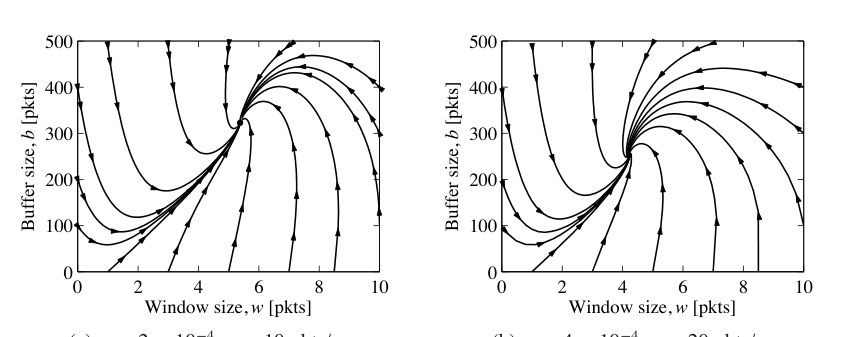
线性系统的稳定性
线性动态系统具有形式
其中 \(A\in\mathbb{R}^{n\times n}\) 是方阵，对应线性控制系统 (2.6) 的动态矩阵。对线性系统来说，原点平衡的稳定性可以由矩阵 \(A\) 的特征值决定：
多项式 \(\det(sI-A)\) 是特征多项式，特征值是它的根。用 \(\lambda_j\) 表示 \(A\) 的第 \(j\) 个特征值，因此 \(\lambda_j\in\lambda(A)\)。一般来说，\(\lambda\) 可以是复数；但如果 \(A\) 是实矩阵，那么任意特征值 \(\lambda\) 的复共轭 \(\bar\lambda\) 也会是特征值。原点总是线性系统的一个平衡点。由于线性系统稳定性只依赖矩阵 \(A\)，稳定性也就是系统性质。因此，对线性系统，我们可以谈论系统稳定性，而不仅是某个特定解或平衡点的稳定性。
最容易分析的一类线性系统，是系统矩阵为对角形式的系统。此时动态为
很容易看到，该系统的状态轨迹彼此独立，因此可以把解写成 \(n\) 个单独系统 \(\dot x_j=\lambda_jx_j\) 的形式。每个标量解为
可以看到，如果 \(\lambda_j\le0\)，平衡点 \(x_e=0\) 稳定；如果 \(\lambda_j<0\)，则渐近稳定。
另一个简单情形是，动态具有块对角形式：
在这种情形中，可以证明特征值为 \(\lambda_j=\sigma_j\pm i\omega_j\)。状态轨迹同样可以分离为每一对状态的独立解，解具有形式
其中 \(j=1,2,\ldots,m\)。由此可见，当且仅当 \(\sigma_j=\operatorname{Re}\lambda_j<0\) 时，该系统渐近稳定。也可以在块对角形式中组合实特征值和复特征值，从而得到两类解的混合。
很少有系统本身就是上述对角形式之一，但有些系统可以通过坐标变换转化为这些形式。其中一类系统，是动态矩阵具有不同的非重复特征值。此时存在矩阵 \(T\in\mathbb{R}^{n\times n}\)，使矩阵 \(TAT^{-1}\) 具有块对角形式，块对角元素对应原矩阵 \(A\) 的特征值，见习题 4.14。如果选择新坐标 \(z=Tx\)，则
于是线性系统具有块对角动态矩阵。此外，变换后系统的特征值与原系统相同，因为如果 \(v\) 是 \(A\) 的特征向量，则可以证明 \(w=Tv\) 是 \(TAT^{-1}\) 的特征向量。注意 \(x(t)=T^{-1}z(t)\)，因此如果变换后系统稳定或渐近稳定，原系统也具有相同稳定性类型。
这个分析表明，对具有不同特征值的线性系统，系统稳定性可以完全通过考察动态矩阵特征值的实部来确定。对更一般的系统，我们使用下列定理。该定理会在下一章证明。
定理 4.1，线性系统稳定性。系统
渐近稳定，当且仅当 \(A\) 的所有特征值都具有严格为负的实部；如果 \(A\) 有任意特征值具有严格为正的实部，则系统不稳定。
例 4.6 隔室模型
考虑第 3.6 节介绍的药物输送双隔室模块。使用浓度作为状态变量，并把状态向量记为 \(x\)，系统动态为
其中输入 \(u\) 是药物注入隔室 1 的速率，隔室 2 中的药物浓度是测量输出 \(y\)。我们希望设计一个反馈控制律，使输出保持在常值 \(y=y_d\)。选择如下形式的输出反馈控制律：
其中 \(u_d\) 是维持期望浓度所需的注入速率，\(k\) 是反馈增益，应选取为使闭环系统稳定。把控制律代入系统，得到
平衡浓度 \(x_e\in\mathbb{R}^2\) 由 \(Ax_e+Bu_e=0\) 给出。选择 \(u_e\) 使 \(y_e=y_d\)，即可得到维持期望输出所需的常值注入速率。现在把坐标平移，使平衡点位于原点。令 \(z=x-x_e\)，得到
现在可以应用定理 4.1 判断系统稳定性。系统特征值由特征多项式的根给出：
根的具体形式较繁琐，但可以证明，只要线性项和常数项都为正，根就具有负实部，见习题 4.16。因此，系统对任意 \(k>0\) 都稳定。
通过线性近似进行稳定性分析
微分方程的一个重要特征是，平衡点的局部稳定性往往可以通过用线性系统近似原系统来确定。下面例子说明基本思想。
例 4.7 倒立摆
再次考虑一个倒立摆，其开环动态为
其中状态定义为 \(x=(\theta,\dot\theta)\)。先考虑 \(x=(0,0)\) 处的平衡点，对应直立位置。如果假设角度 \(\theta=x_1\) 保持很小，就可以用 \(x_1\) 替代 \(\sin x_1\)，用 1 替代 \(\cos x_1\)，得到近似系统
直观地说，只要 \(x_1\) 很小，这个系统的行为就应与更复杂模型相似。特别是，通过绘制相图或计算式 (4.9) 中动态矩阵的特征值，可以验证平衡点 \((0,0)\) 不稳定。
也可以在稳定平衡点 \(x=(\pi,0)\) 附近近似系统。此时需要围绕 \(x_1=\pi\) 展开 \(\sin x_1\) 和 \(\cos x_1\)：
如果定义 \(z_1=x_1-\pi\)、\(z_2=x_2\)，所得近似动态为
注意 \(z=(0,0)\) 是这个系统的平衡点，它具有与图 4.8 所示动态相同的基本形式。图 4.11 显示原系统和对应平衡点附近近似系统的相图。注意二者非常相似，虽然并不完全相同。可以证明，如果线性近似具有渐近稳定或不稳定的平衡点，则原系统的局部稳定性也必须相同，见定理 4.3。
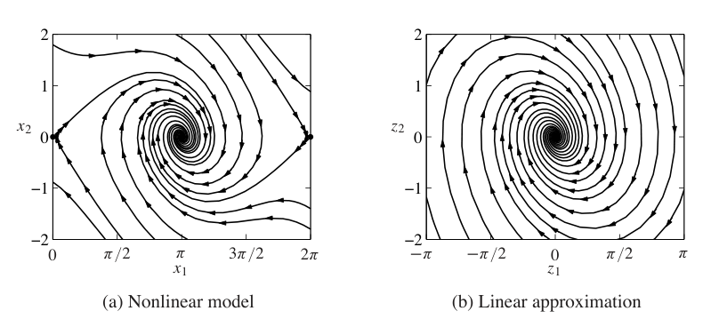
更一般地，假设非线性系统
在 \(x_e\) 处有平衡点。计算向量场的泰勒级数展开，可写为
由于 \(F(x_e)=0\)，可以通过选择新状态变量 \(z=x-x_e\) 来近似系统：
我们称系统 (4.11) 为原非线性系统的线性近似，或在 \(x_e\) 处的线性化。
线性模型可以用来研究非线性系统在平衡点附近的行为，这一点非常有力。事实上，我们还可以进一步使用非线性系统的局部线性近似来设计反馈律，使系统保持在平衡点附近，也就是设计动态。因此，反馈可以用来保证解保持在平衡点附近，而这又保证用于稳定系统的线性近似有效。
线性近似也可以用于理解非平衡解的稳定性，下面例子说明这一点。
例 4.8 稳定极限环
考虑式 (4.6) 给出的系统：
其相图见图 4.5。该微分方程有一个周期解
且 \(x_1^2(0)+x_2^2(0)=1\)。
为了考察这个解的稳定性，引入极坐标 \(r\) 和 \(\theta\)，它们与状态变量 \(x_1,x_2\) 的关系为
求导得到关于 \(\dot r\) 和 \(\dot\theta\) 的线性方程：
求解这个线性系统，经过一些计算得到
注意，方程解耦了，因此可以分别分析每个状态的稳定性。
\(r\) 的方程有三个平衡：\(r=0\)、\(r=1\) 和 \(r=-1\)，最后一个不可实现，因为 \(r\) 必须为正。用 \(F(r)=r(1-r^2)\) 对径向动态线性化，可以分析这些平衡的稳定性。对应线性动态为
这里略微滥用记号，用 \(r\) 表示相对平衡点的偏差。由 \(1-3r_e^2\) 的符号可知，平衡 \(r=0\) 不稳定，而平衡 \(r=1\) 渐近稳定。因此，对任意初始条件 \(r>0\)，随着时间趋于无穷，解会趋于 \(r=1\)；但如果系统从 \(r=0\) 开始，它会一直停在该平衡点。这意味着，原系统中所有不是从 \(x_1=x_2=0\) 开始的解，随着时间增加都会接近圆 \(x_1^2+x_2^2=1\)。
为了说明完整解 (4.12) 的稳定性，还必须研究具有不同初始条件的邻近解的行为。前面已经说明，只要 \(r(0)>0\)，半径 \(r\) 会接近解 (4.12) 的半径。角度 \(\theta\) 的方程可以解析积分，得到 \(\theta(t)=-t+\theta(0)\)，这说明从不同角度 \(\theta\) 开始的解既不会收敛，也不会发散。因此，单位圆是吸引的，但解 (4.12) 只是稳定的，并非渐近稳定。图 4.12 的仿真展示了系统行为。注意，解会迅速接近圆，但解之间保持恒定相位差。
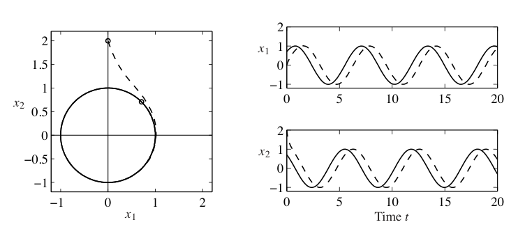
4.4 李雅普诺夫稳定性分析
现在回到完整非线性系统的研究：
定义了非线性动态系统解何时稳定之后，我们可以进一步问：如何证明给定解稳定、渐近稳定或不稳定。对物理系统，人们经常可以基于能量耗散来论证稳定性。把这种技术推广到任意动态系统，就得到用李雅普诺夫函数替代能量的思想。
本节介绍判断非线性系统 (4.13) 解的稳定性的技术。我们通常关心平衡点稳定性，并且为方便起见，假设感兴趣的平衡点为 \(x_e=0\)。如果不是这样，可以在新坐标 \(z=x-x_e\) 中重写方程。
李雅普诺夫函数
李雅普诺夫函数 \(V:\mathbb{R}^n\to\mathbb{R}\) 是一种类似能量的函数，可用于判断系统稳定性。粗略地说，如果能找到一个非负函数，并且它沿系统轨迹总是下降，就可以断定该函数的最小点是一个局部稳定平衡点。
为了更正式地描述这一点，先给出几个定义。如果连续函数 \(V\) 满足对所有 \(x\ne0\) 有 \(V(x)>0\)，且 \(V(0)=0\)，则称 \(V\) 正定。类似地，如果对所有 \(x\ne0\) 有 \(V(x)<0\)，且 \(V(0)=0\)，则称函数负定。如果 \(V(x)\ge0\) 对所有 \(x\) 成立，但 \(V(x)\) 可能在 \(x=0\) 以外的点为零，则称 \(V\) 正半定。
为了说明正定函数和正半定函数之间的区别，假设 \(x\in\mathbb{R}^2\)，并令
\(V_1\) 和 \(V_2\) 总是非负。然而，即使 \(x\ne0\)，\(V_1\) 也可能为零。具体地，如果 \(x=(0,c)\)，其中 \(c\in\mathbb{R}\) 为任意非零数，那么 \(V_1(x)=0\)。另一方面，\(V_2(x)=0\) 当且仅当 \(x=(0,0)\)。因此 \(V_1\) 是正半定的，而 \(V_2\) 是正定的。
现在可以刻画系统 (4.13) 中平衡点 \(x_e=0\) 的稳定性。
定理 4.2，李雅普诺夫稳定性定理。令 \(V\) 是 \(\mathbb{R}^n\) 上的非负函数，并令 \(\dot V\) 表示 \(V\) 沿系统动态 (4.13) 轨迹的时间导数：
令 \(B_r=B_r(0)\) 为原点周围半径为 \(r\) 的球。如果存在 \(r>0\)，使得对所有 \(x\in B_r\)，\(V\) 正定且 \(\dot V\) 负半定，则 \(x=0\) 在李雅普诺夫意义下局部稳定。如果在 \(B_r\) 中 \(V\) 正定且 \(\dot V\) 负定，则 \(x=0\) 局部渐近稳定。
如果 \(V\) 满足上述条件之一，我们称 \(V\) 是系统的局部李雅普诺夫函数。这些结果有一个很好的几何解释。正定函数的水平曲线由 \(V(x)=c,\ c>0\) 定义，对每个 \(c\) 都给出一条闭合轮廓，如图 4.13 所示。\(\dot V(x)\) 为负这一条件只意味着向量场指向更低水平的轮廓。因此，轨迹会移动到越来越小的 \(V\) 值。如果 \(\dot V\) 负定，则 \(x\) 必须接近 0。
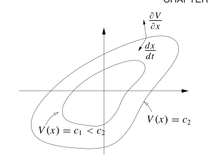
例 4.9 标量非线性系统
考虑标量非线性系统
这个系统在 \(x=1\) 和 \(x=-2\) 处有平衡点。考虑 \(x=1\) 处的平衡点，并使用 \(z=x-1\) 重写动态：
它在 \(z=0\) 处有平衡点。现在考虑候选李雅普诺夫函数
它是全局正定的。\(V\) 沿系统轨迹的导数为
如果把分析限制在区间 \(B_r\) 中，其中 \(r<2\)，则 \(2+z>0\)，可以两边乘以 \(2+z\)，得到
因此，对所有 \(z\in B_r,\ z\ne0\)，有 \(\dot V(z)<0\)，从而平衡点 \(x_e=1\) 局部渐近稳定。
如果 \(\dot V\) 是负半定的，情形会稍微复杂一点。此时在 \(x\ne0\) 时也可能有 \(\dot V(x)=0\)，因此 \(x\) 的值可能停止下降。下面例子说明这种情况。
例 4.10 悬挂摆
悬挂摆的一个归一化模型为
其中 \(x_1\) 是摆与竖直方向之间的角度，正 \(x_1\) 对应逆时针旋转。该方程有平衡点 \(x_1=x_2=0\)，对应摆竖直向下悬挂。为了考察这个平衡的稳定性，选择总能量作为李雅普诺夫函数：
泰勒级数近似表明，该函数在小 \(x\) 附近正定。\(V(x)\) 的时间导数为
由于这个函数是正半定的，由李雅普诺夫定理可知平衡是稳定的，但不一定渐近稳定。实际情况是，当被扰动时，摆会沿一条对应恒定能量的轨迹运动。
李雅普诺夫函数并不总是容易找到，而且并不唯一。许多情况下，可以从能量函数开始，如例 4.10 所做的那样。事实上，在一定条件下，对任何稳定系统都能找到李雅普诺夫函数，因此如果系统稳定，就存在李雅普诺夫函数，反之亦然。近来，平方和方法提供了系统寻找李雅普诺夫函数的途径 [167]。平方和技术可应用于广泛系统，包括动态由多项式方程描述的系统，以及混合系统。混合系统在状态空间不同区域可以有不同模型。
对如下形式的线性动态系统
可以用系统方法构造李雅普诺夫函数。为此，考虑如下二次函数：
其中 \(P\in\mathbb{R}^{n\times n}\) 是对称矩阵，即 \(P=P^T\)。要求 \(V\) 正定，等价于要求 \(P\) 是正定矩阵：
写作 \(P>0\)。可以证明，如果 \(P\) 对称，那么 \(P\) 正定当且仅当它所有特征值都为实数且为正。
给定候选李雅普诺夫函数 \(V(x)=x^TPx\)，可计算它沿系统流的导数：
要求 \(\dot V\) 负定，也就是要求矩阵 \(Q\) 正定。因此，要为线性系统寻找李雅普诺夫函数，只需选择一个 \(Q>0\)，并求解李雅普诺夫方程：
这是 \(P\) 各元素中的线性方程，因此可用线性代数求解。可以证明，如果矩阵 \(A\) 的所有特征值都位于左半平面，则该方程总有解。此外，如果 \(Q\) 正定，则解 \(P\) 也是正定的。因此，对稳定线性系统，总能找到一个二次李雅普诺夫函数。证明推迟到第 5 章，届时会发展更多线性系统分析工具。
知道可以直接为线性系统寻找李雅普诺夫函数之后，就可以研究非线性系统的稳定性。考虑系统
其中 \(F(0)=0\)，\(\tilde F(x)\) 包含 \(x\) 各元素的二阶及更高阶项。函数 \(Ax\) 是 \(F(x)\) 在原点附近的近似。我们可以为线性近似确定李雅普诺夫函数，再考察它是否也是完整非线性系统的李雅普诺夫函数。下面例子说明这种方法。
例 4.11 基因开关
考虑图 4.14a 所示，一组抑制子连接成环的动态。这个系统的归一化动态在习题 2.9 中给出：
其中 \(z_1,z_2\) 是蛋白浓度的尺度化版本，\(n\) 和 \(\mu\) 是描述基因之间互连的参数，外部输入 \(u_1,u_2\) 已设为零。
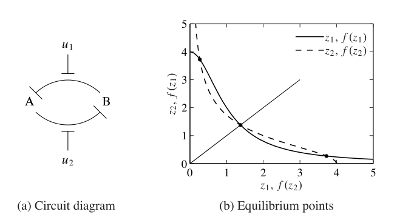
系统平衡点通过令时间导数为零得到。定义
则平衡点由方程
的解定义。如果把曲线 \((z_1,f(z_1))\) 和 \((f(z_2),z_2)\) 画在图上，那么这些方程在曲线相交时有解，如图 4.14b 所示。由于曲线形状，可以证明总会有三个解：一个满足 \(z_{1e}=z_{2e}\)，一个满足 \(z_{1e}<z_{2e}\)，一个满足 \(z_{1e}>z_{2e}\)。如果 \(\mu\gg1\)，可以证明这些解近似为
为了检查系统稳定性，把 \(f(u)\) 写成围绕 \(u_e\) 的泰勒展开：
其中 \(f'\) 表示一阶导数，\(f''\) 表示二阶导数。利用这些近似，动态可写为
其中 \(w=z-z_e\) 是平移后的状态，\(\tilde F(w)\) 表示二阶及更高阶项。
现在使用式 (4.14) 搜索李雅普诺夫函数。选择 \(Q=I\)，并令 \(P\in\mathbb{R}^{2\times2}\) 的元素为 \(p_{ij}\)，搜索方程
的解，其中 \(f'_1=f'(z_{1e})\)，\(f'_2=f'(z_{2e})\)。注意，我们已经设 \(p_{21}=p_{12}\)，以强制 \(P\) 对称。展开矩阵乘法，可得到未知量 \(p_{ij}\) 的一组线性方程。解这些线性方程可得
为了检查 \(V(w)=w^TPw\) 是否为李雅普诺夫函数，必须验证 \(V(w)\) 正定，等价地验证 \(P>0\)。由于 \(P\) 是 \(2\times2\) 对称矩阵，它有两个实特征值 \(\lambda_1,\lambda_2\)，满足
为了使 \(P\) 正定，必须有 \(\lambda_1,\lambda_2\) 都为正，因此要求
可以化简得到，只需检查 \(1-f'_1f'_2\) 的符号。特别地，若要 \(P\) 正定，需要
现在可利用前面定义的 \(f'\) 表达式，并在式 (4.17) 推导出的平衡点近似位置处求值。对于 \(z_{1e}\ne z_{2e}\) 的平衡点，可以证明
使用习题 2.9 中的 \(n=2\) 和 \(\mu\approx100\)，可见 \(f'(z_{1e})f'(z_{2e})\ll1\)，因此 \(P\) 正定。这说明 \(V\) 是正定函数，并因此是系统的潜在李雅普诺夫函数。
为了判断系统 (4.16) 是否稳定，现在在平衡点处计算 \(\dot V\)。由构造可得
由于 \(\tilde F\) 中所有项都是 \(w\) 的二阶或更高阶项，\(\tilde F^T(w)Pw\) 和 \(w^TP\tilde F(w)\) 由至少三阶的 \(w\) 项组成。因此，如果 \(w\) 足够接近零，三阶及更高阶项会小于二次项。于是，在 \(w=0\) 充分近的区域内，\(\dot V\) 负定，这使我们可以得出这些平衡点稳定的结论。
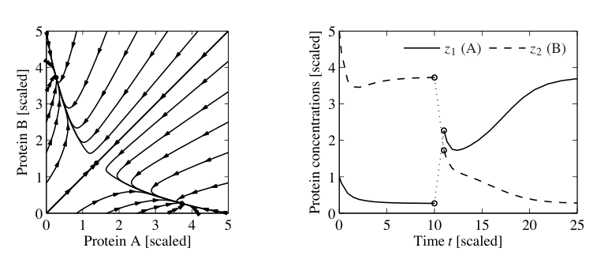
图 4.15 显示了 \(\mu=4\) 时系统的相图和时间轨迹，说明了系统的双稳态性质。当初始条件中蛋白 B 浓度大于蛋白 A 时，解会收敛到近似为 \((1/\mu^{n-1},\mu)\) 的平衡点。如果 A 大于 B，解则趋向 \((\mu,1/\mu^{n-1})\)。满足 \(z_{1e}=z_{2e}\) 的平衡点不稳定。
更一般地，可以研究线性近似对非线性方程解的稳定性能说明什么。下面定理对平衡点稳定性给出部分答案。
定理 4.3。考虑动态系统 (4.15)，其中 \(F(0)=0\)，且 \(\tilde F\) 满足当 \(\|x\|\to0\) 时
如果 \(A\) 的所有特征值实部都严格小于零，则 \(x_e=0\) 是方程 (4.15) 的局部渐近稳定平衡点。
这个定理说明，线性近似的渐近稳定性蕴含原非线性系统的局部渐近稳定性。该定理对控制很重要，因为它说明，稳定一个非线性系统的线性近似，会得到非线性系统的稳定平衡。该定理的证明沿用例 4.11 中的技术。形式证明见 [123]。
克拉索夫斯基-拉萨尔 不变性原理
对一般非线性系统，尤其是符号形式给出的系统，要找到一个正定函数 \(V\)，并使其导数严格负定，可能很困难。克拉索夫斯基-拉萨尔 定理使我们能在较弱条件下得出平衡点渐近稳定性，特别是在 \(\dot V\) 负半定的情形下。这通常更容易构造。不过，它只适用于时不变系统或周期系统。本节使用一些额外的动态系统概念，更详细说明见 Hahn [94] 或 Khalil [123]。
我们处理时不变情形，并先引入几个定义。把时不变系统
的解轨迹记为 \(x(t;a)\)，它是从 \(t_0=0\) 时的 \(a\) 出发，在时刻 \(t\) 的式 (4.18) 的解。轨迹 \(x(t;a)\) 的 \(\omega\) 极限集，是所有满足如下性质的点 \(z\in\mathbb{R}^n\) 构成的集合：存在一列严格递增的时间 \(t_n\)，使 \(x(t_n;a)\to z\)，当 \(n\to\infty\)。如果对所有 \(b\in M\)，都有 \(x(t;b)\in M\) 对所有 \(t\ge0\) 成立，则集合 \(M\subset\mathbb{R}^n\) 称为不变集。可以证明，每条轨迹的 \(\omega\) 极限集都是闭的，并且是不变的。现在可以陈述 克拉索夫斯基-拉萨尔 原理。
定理 4.4，克拉索夫斯基-拉萨尔 原理。令 \(V:\mathbb{R}^n\to\mathbb{R}\) 是局部正定函数，并且在紧集
上有 \(\dot V(x)\le0\)。定义
当 \(t\to\infty\) 时，轨迹趋向 \(S\) 内最大的一个不变集，也就是它的 \(\omega\) 极限集包含在 \(S\) 内最大不变集中。特别地，如果 \(S\) 除 \(x=0\) 外不包含其他不变集，则 0 渐近稳定。
李雅普诺夫函数常常可用于设计稳定化控制器。下面的例子说明这一点，同时也说明 克拉索夫斯基-拉萨尔 原理如何应用。
例 4.12 倒立摆
按照例 2.7 中的分析，倒立摆可以由如下归一化模型描述：
其中 \(x_1\) 是相对于直立位置的角偏差，\(u\) 是支点的尺度化加速度，如图 4.16a 所示。系统在 \(x_1=x_2=0\) 处有平衡，对应摆直立。这个平衡是不稳定的。
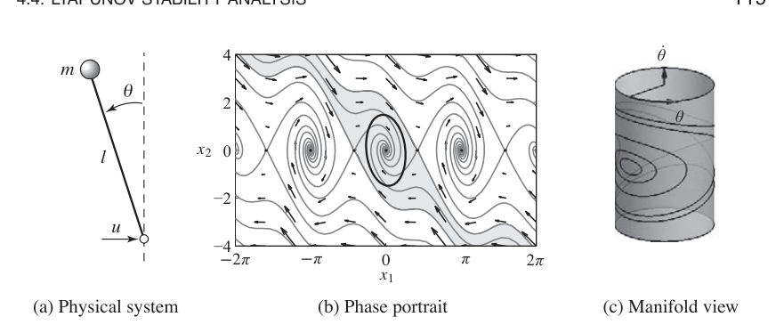
为了寻找稳定化控制器，考虑如下候选李雅普诺夫函数：
泰勒级数展开表明，如果 \(a>0.5\)，该函数在原点附近正定。\(V(x)\) 的时间导数为
选择反馈律
得到
由李雅普诺夫定理可知，平衡局部稳定。不过，由于该函数只是负半定的，不能用定理 4.2 得出渐近稳定性。然而注意到，\(\dot V=0\) 蕴含 \(x_2=0\) 或 \(x_1=\pi/2\pm n\pi\)。
如果把分析限制在原点附近的小邻域 \(\Omega_r\)，其中 \(r\ll\pi/2\)，就可定义
并计算 \(S\) 内的最大不变集。若一条轨迹要留在这个集合中，就必须对所有 \(t\) 都有 \(x_2=0\)，因此也有 \(\dot x_2(t)=0\)。利用系统动态 (4.19) 可知，\(x_2(t)=0\) 且 \(\dot x_2(t)=0\) 蕴含 \(x_1(t)=0\)。因此，\(S\) 内最大不变集为 \((x_1,x_2)=0\)。可以使用 克拉索夫斯基-拉萨尔 原理得出原点局部渐近稳定。图 4.16b 给出闭环系统的相图。
在分析和相图中，我们把摆角 \(\theta=x_1\) 当作实数处理。事实上，\(\theta\) 是角度，\(\theta=2\pi\) 与 \(\theta=0\) 等价。因此，系统动态实际上在一个流形，也就是光滑曲面上演化，如图 4.16c 所示。流形上的非线性动态系统分析更复杂，但使用的许多基本思想与这里介绍的相同。
4.5 参数与非局部行为
到目前为止，我们探索的大多数工具都关注固定系统在平衡点附近的局部行为。本节简要介绍非线性系统全局行为，以及系统行为如何依赖系统模型中的参数。
吸引域
为了洞察非线性系统行为，可以先找到平衡点。然后分析平衡点附近的局部行为。系统在平衡点附近的行为称为系统的局部行为。
远离平衡点时，系统解可能非常不同。例如，例 4.12 中的稳定化摆就说明了这一点。倒立平衡点是稳定的，小振荡最终收敛到原点。但远离该平衡点时，有些轨迹会收敛到其他平衡点，甚至还会出现摆绕过顶部多次的情形，产生很长的振荡，这些振荡在拓扑上不同于原点附近的振荡。
为了更好地理解系统动态，可以考察所有会收敛到某个渐近稳定平衡点的初始条件集合。这个集合称为该平衡点的吸引域。图 4.16b 相图中的阴影区域给出一个例子。一般来说，计算吸引域很困难。不过，即使无法确定完整吸引域，常常也能得到稳定平衡点周围的一些吸引小片区域。这提供了关于系统行为的部分信息。
近似吸引域的一种方法是使用李雅普诺夫函数。假设 \(V\) 是系统围绕某个平衡点 \(x_0\) 的局部李雅普诺夫函数。令 \(\Omega_r\) 为 \(V(x)\) 取值小于 \(r\) 的集合：
并假设对所有 \(x\in\Omega_r\) 有 \(\dot V(x)\le0\)，且等号只在平衡点 \(x_0\) 处成立。那么 \(\Omega_r\) 位于该平衡点的吸引域内。由于这种近似依赖李雅普诺夫函数，而李雅普诺夫函数选择并不唯一，它有时会是非常保守的估计。
有时可以找到一个李雅普诺夫函数 \(V\)，使 \(V\) 对所有 \(x\in\mathbb{R}^n\) 都正定，且 \(\dot V\) 对所有 \(x\in\mathbb{R}^n\) 都负定或负半定。在这种情况下，可以证明平衡点的吸引域是整个状态空间，并且该平衡点称为全局稳定。
例 4.13 稳定化倒立摆
再次考虑例 4.12 中的稳定化倒立摆。系统的李雅普诺夫函数为
且 \(\dot V\) 对所有 \(x\) 都负半定，并在 \(x_1\ne\pm\pi/2\) 时非零。因此，对任意满足 \(|x_2|<\pi/2\) 的 \(x\)，\(V(x)>0\) 会位于由 \(V(x)\) 水平曲线定义的不变集中。图 4.16b 显示了其中一个水平集。
分岔
非线性系统的另一个重要性质，是其行为如何随着支配动态的参数变化而改变。可以在模型语境中研究这一点，方法是探索平衡点位置、稳定性、吸引域以及其他动态现象，例如极限环，如何根据模型中参数的取值而变化。
考虑如下形式的微分方程：
其中 \(x\) 是状态，\(\mu\) 是一组描述方程族的参数。平衡解满足
随着 \(\mu\) 改变，对应解 \(x_e(\mu)\) 也可能改变。如果系统 (4.20) 在 \(\mu=\mu^*\) 处的行为发生定性变化，我们就说系统在 \(\mu^*\) 处发生分岔。这可能由稳定性类型改变引起，也可能由某个 \(\mu\) 值处解的数量改变引起。
例 4.14 捕食者猎物
考虑第 3.7 节描述的捕食者猎物系统。系统动态为
其中 \(H\) 和 \(L\) 分别为野兔数量和猞猁数量，也就是猎物和捕食者；\(a,b,c,d,k,r\) 是建模给定捕食者猎物系统的参数，第 3.7 节有更详细说明。系统有一个满足 \(H_e>0\)、\(L_e>0\) 的平衡点，可数值求得。
为了探索模型参数如何影响系统行为，我们选择关注两个具体参数：\(a\)，种群之间的相互作用系数；\(c\)，影响猎物消耗率的参数。图 4.17a 是数值计算的参数稳定性图，显示在所选参数空间中平衡点稳定的区域，其余参数保持在标称值。可以看到，对某些 \(a,c\) 组合，平衡点稳定；而对其他取值，该平衡点不稳定。
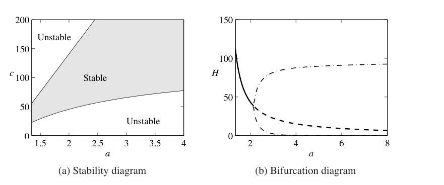
图 4.17b 是系统的数值分岔图。在该图中，我们选择一个参数 \(a\) 变化，并在纵轴上绘制其中一个状态 \(H\) 的平衡值。其余参数设为标称值。实线表示平衡点稳定；虚线表示平衡点不稳定。注意，当 \(c=50\)，也就是标称值，且 \(a\) 从 1.35 变化到 4 时，分岔图中的稳定性与参数稳定性图一致。对捕食者猎物系统来说，当平衡点不稳定时，解会收敛到一个稳定极限环。图 4.17b 中的点划线显示了该极限环的幅值。
控制线性系统时非常常见的一种特殊分岔形式是：平衡点保持固定，但随着参数变化，平衡点稳定性改变。在这种情况下，把系统特征值作为参数函数画出来很有启发性。这类图称为根轨迹图，因为它给出参数改变时特征值的轨迹。当参数值使系统存在实部为零的特征值时，就会发生分岔。LabVIEW、MATLAB 和 Mathematica 等计算环境都有绘制根轨迹的工具。
例 4.15 自行车模型的根轨迹图
考虑第 3.2 节式 (3.7) 给出的线性自行车模型。引入状态变量 \(x_1=\phi\)、\(x_2=\delta\)、\(x_3=\dot\phi\)、\(x_4=\dot\delta\)，并令转向力矩 \(T=0\)，方程可写为
其中 \(I\) 是 \(2\times2\) 单位矩阵，\(v_0\) 是自行车速度。图 4.18a 显示特征值实部如何随速度变化。图 4.18b 显示 \(A\) 的特征值如何依赖速度 \(v_0\)。图中显示，自行车在低速时不稳定，因为有两个特征值位于右半平面。随着速度增加，这些特征值移入左半平面，表明自行车开始自稳定。速度进一步增加时，有一个靠近原点的特征值进入右半平面，使自行车再次不稳定。不过这个特征值很小，因此骑行者很容易将其稳定。图 4.18a 显示，自行车在 6 到 10 m/s 之间自稳定。
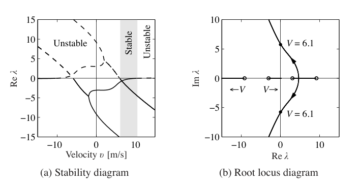
参数稳定性图和分岔图可以为非线性系统动态提供有价值的洞见。通常需要仔细选择要绘制的参数，包括在可能时组合系统的自然参数以消除多余参数。AUTO、LOCBIF 和 XPPAUT 等计算程序提供了生成稳定性图和分岔图的数值算法。
用反馈设计非线性动态
本书大部分内容会依赖线性近似来设计反馈律，以稳定平衡点并提供期望性能水平。不过，对某些类别的问题，反馈控制器必须是非线性的才能完成其功能。利用李雅普诺夫函数，我们常常可以设计提供稳定行为的非线性控制律，例 4.12 已经展示过。
系统设计非线性控制器的一种方法，是从候选李雅普诺夫函数 \(V(x)\) 和控制系统 \(\dot x=f(x,u)\) 开始。如果对每个 \(x\)，都存在一个 \(u\)，使
我们就称 \(V(x)\) 为控制李雅普诺夫函数。在这种情况下，可能可以找到一个函数 \(\alpha(x)\)，使 \(u=\alpha(x)\) 稳定系统。下面例子说明这种方法。
例 4.16 噪声抵消
噪声抵消用于消费电子产品和工业系统，以减小噪声和振动影响。基本思想是通过生成相反信号，在局部减小噪声效果。图 4.19a 所示的带噪声抵消耳机就是典型例子。系统示意图见图 4.19b。系统有两个麦克风，一个在耳机外部，用来采集外部噪声 \(n\)；另一个在耳机内部，用来采集信号 \(e\)，它由期望信号和穿透耳机的外部噪声组合而成。外部麦克风的信号被滤波并送入耳机，其方式使它抵消穿透到耳机内部的外部噪声。滤波器参数由反馈机制调整，使内部麦克风中的噪声信号尽可能小。反馈本质上是非线性的，因为它通过改变滤波器参数起作用。
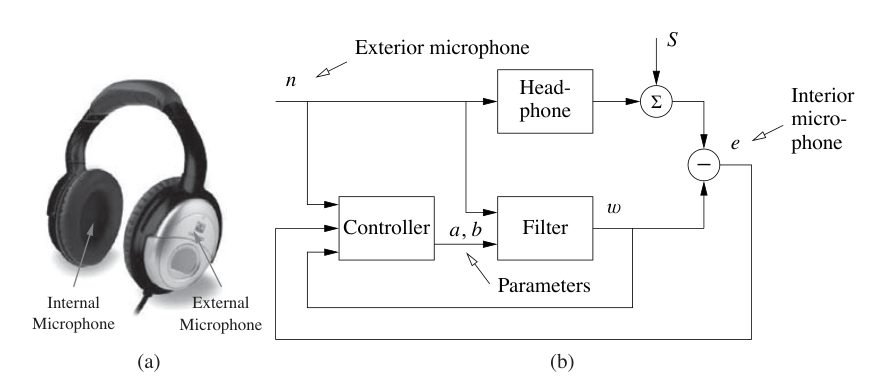
为了分析系统，简单起见，假设外部噪声进入耳机的传播由如下第一阶动态系统建模：
其中 \(z\) 是声级，参数 \(a_0<0\) 和 \(b_0\) 未知。假设滤波器是同一类型的动态系统：
我们希望找到一个控制器来更新 \(a\) 和 \(b\)，使它们收敛到未知参数 \(a_0\) 和 \(b_0\)。引入 \(x_1=e=w-z\)、\(x_2=a-a_0\)、\(x_3=b-b_0\)，则有
如果能够找到反馈律来改变参数 \(a\) 和 \(b\)，使误差 \(e\) 趋于零，就能实现噪声抵消。为此，选择
作为式 (4.23) 的候选李雅普诺夫函数。\(V\) 的导数为
选择
可得 \(\dot V=\alpha a_0x_1^2<0\)。因此，只要 \(e=x_1=w-z\ne0\)，该二次函数就会下降。非线性反馈 (4.24) 试图改变参数，使信号与噪声之间的误差很小。注意，反馈律 (4.24) 并不显式使用模型 (4.22)。
图 4.20 显示了系统仿真。在仿真中，信号表示为纯正弦波，噪声表示为宽带噪声。图中显示，噪声抵消带来显著改善。没有噪声抵消时，看不到正弦信号。滤波器参数从初始值 \(a=b=0\) 快速变化。实际中会使用具有更多系数的更高阶滤波器。
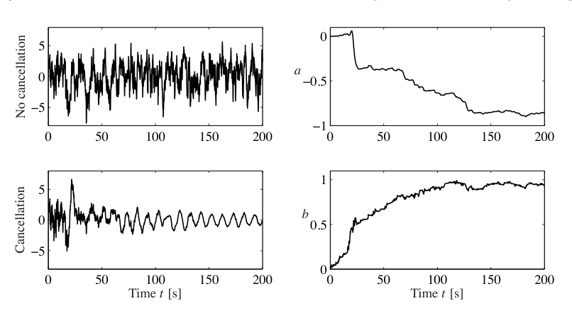
4.6 延伸阅读
动态系统领域有丰富文献，用于刻画动态系统可能具有的特征，并描述动态中的参数变化如何导致行为的拓扑变化。Strogatz [188] 的书以及 Abraham 和 Shaw [2] 高度图解化的教材，给出了可读性很好的动态系统入门。更技术性的处理包括 Andronov、Vitt 和 Khaikin [8]，Guckenheimer 和 Holmes [91]，以及 Wiggins [201]。对力学有强烈兴趣的学生，Arnold [13] 以及 Marsden 和 Ratiu [147] 的教材使用微分几何工具，提供了优雅方法。最后，Wilson [203] 以及 Ellner 和 Guckenheimer [70] 对生物学中的动态系统方法作了很好的处理。李雅普诺夫稳定性理论有大量文献，包括 Malkin [144]、Hahn [94] 和 Krasovski [128] 的经典教材。我们强烈推荐 Khalil [123] 的综合性处理。
习题
4.1 时不变系统。证明如果微分方程 (4.1) 有一个解 \(x(t)\)，初始条件为 \(x(t_0)=x_0\)，那么 \(\tilde x(\tau)=x(\tau+t_0)\) 是微分方程
在初始条件 \(\tilde x(0)=x_0\) 下的解。
4.2 水箱中的流动。一个圆柱形水箱截面积为 \(A\ \text{m}^2\)，有效出口面积为 \(a\ \text{m}^2\)，流入量为 \(q_{\mathrm{in}}\ \text{m}^3/\text{s}\)。能量平衡显示出口速度为 \(v=\sqrt{2gh}\ \text{m/s}\)，其中 \(g\ \text{m/s}^2\) 是重力加速度，\(h\ \text{m}\) 是出口与水箱水位之间的距离。证明系统可建模为
使用参数 \(A=0.2\)、\(a_e=0.01\)。当流入为零、初始水位为 \(h=0.2\) 时仿真系统。你预计仿真中会有什么困难吗？
4.3 巡航控制。考虑第 3.1 节描述的巡航控制系统。在平坦路面上 \(\theta=0\)，三挡，使用 PI 控制器，\(k_p=0.5\)、\(k_i=0.1\)，\(m=1000\) kg，期望速度 20 m/s，生成闭环系统的相图。系统模型应包括输入在 0 到 1 之间饱和的影响。
4.4 李雅普诺夫函数。考虑二阶系统
其中 \(a,b,c>0\)。考察函数
是否为该系统的李雅普诺夫函数，并给出必须满足的条件。
4.5 带阻尼弹簧质量系统。考虑动态为
的带阻尼弹簧质量系统。一个自然的候选李雅普诺夫函数是系统总能量：
使用 克拉索夫斯基-拉萨尔 定理证明该系统渐近稳定。
4.6 发电机。习题 2.7 给出了连接到强电网的发电机简单模型：
参数
是最大可输送功率 \(P_{\max}=EV/X\) 与机械功率 \(P_m\) 的比值。
a. 把 \(a\) 看作分岔参数，讨论平衡如何依赖 \(a\)。
b. 对 \(a>1\)，证明在 \(\delta_0=\arcsin(1/a)\) 处有一个中心，在 \(\delta=\pi-\delta_0\) 处有一个鞍点。
c. 证明存在一条通过鞍点的解，满足
使用仿真说明稳定区域是由这条解包围的区域内部。考察如果系统在一个略大于 1 的 \(a\) 值下处于平衡，而 \(a\) 突然减小，会发生什么。这对应线路电抗突然增加。
4.7 李雅普诺夫方程。证明如果 \(A\) 的所有特征值都位于左半平面，则李雅普诺夫方程 (4.14) 总有解。提示：利用李雅普诺夫方程对 \(P\) 是线性的这一事实，并从 \(A\) 具有不同特征值的情形开始。
4.8 拥塞控制。考虑第 3.4 节描述的拥塞控制问题。确认系统平衡点由式 (3.21) 给出，并使用线性近似计算该平衡点的稳定性。
4.9 摆起倒立摆。考虑例 4.4 中讨论的倒立摆，它由
描述，其中 \(\theta\) 是摆与竖直方向之间的角度，控制信号 \(u\) 是支点加速度。使用能量函数
证明状态反馈
会使摆摆起到直立位置。
4.10 根轨迹图。考虑线性系统
并使用反馈 \(u=-ky\)。绘制特征值位置如何随参数 \(k\) 变化。
4.11 离散时间李雅普诺夫函数。考虑非线性离散时间系统 \(x[k+1]=f(x[k])\)，平衡点为 \(x_e=0\)。假设存在一个正定函数 \(V:\mathbb{R}^n\to\mathbb{R}\)，使得对 \(x[k]\ne0\) 有
证明 \(x_e=0\) 渐近稳定。
4.12 运算放大器振荡器。习题 3.5 显示了一个运放振荡器电路。该线性电路的振荡解稳定但不渐近稳定。下图显示了一个含非线性元件的修改电路示意图。修改方法是在每个带电容的运算放大器周围加入使用乘法器的反馈。信号
是幅值误差。证明系统建模为
证明该电路给出一个幅值为 \(v_0\) 的稳定极限环振荡。提示：使用例 4.8 的结果。
4.13 自激活基因电路。考虑实现自激活的基因电路动态：该基因产生的蛋白质是该蛋白质的激活子，因此通过正反馈刺激自身产生。使用例 2.13 中提出的模型，系统动态可写为
其中 \(p,m\ge0\)。找出系统平衡点，并使用李雅普诺夫分析研究每个平衡点的局部稳定性。
4.14 对角系统。令 \(A\in\mathbb{R}^{n\times n}\) 是一个具有实特征值 \(\lambda_1,\ldots,\lambda_n\) 和对应特征向量 \(v_1,\ldots,v_n\) 的方阵。
a. 证明如果特征值不同，即对 \(i\ne j\) 有 \(\lambda_i\ne\lambda_j\)，则 \(v_i\ne v_j\)。
b. 证明特征向量构成 \(\mathbb{R}^n\) 的一组基，因此任何向量 \(x\) 都可以写为 \(x=\sum_i\alpha_iv_i\)，其中 \(\alpha_i\in\mathbb{R}\)。
c. 令
证明 \(TAT^{-1}\) 是式 (4.8) 形式的对角矩阵。
d. 证明如果某些 \(\lambda_i\) 是复数，则在适当坐标下，\(A\) 可以写成
其中 \(\Lambda_i=\lambda\in\mathbb{R}\)，或者
线性系统动态的这种形式通常称为模态形式。
4.15 Furuta 摆。下图左侧显示了 Furuta 摆，它是位于旋转臂上的倒立摆。考虑摆臂以恒定速率旋转的情形。系统有多个平衡点，并且这些平衡点依赖角速度 \(\omega\)，如右侧分岔图所示。
系统运动方程为
其中 \(J_p\) 是摆相对于其支点的转动惯量，\(m_p\) 是摆质量，\(l\) 是支点与摆质心之间的距离，\(\omega_0\) 是摆臂转动速率。
a. 确定系统平衡点，以及每个平衡点的稳定条件，用 \(\omega\) 表示。
b. 把角速度看作分岔参数，并验证上方给出的分岔图。这是叉形分岔的一个例子。
4.16 Routh-Hurwitz 判据。考虑具有如下特征多项式的线性微分方程：
证明系统渐近稳定，当且仅当所有系数 \(a_i\) 都为正，并且 \(a_1a_2>a_3\)。这是一组更一般判据的特殊情形，这组判据称为 Routh-Hurwitz 判据。